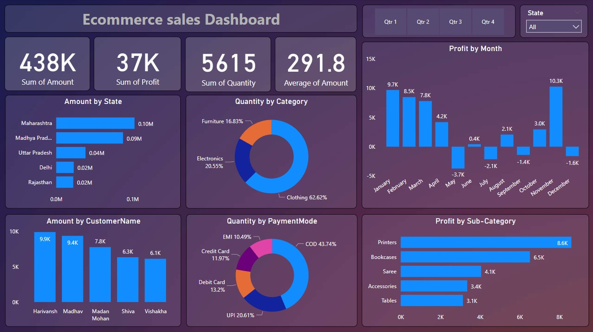
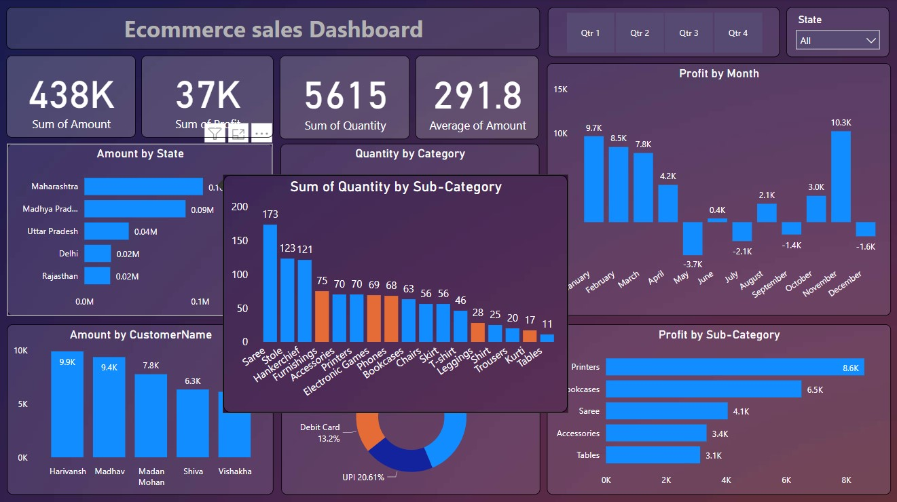
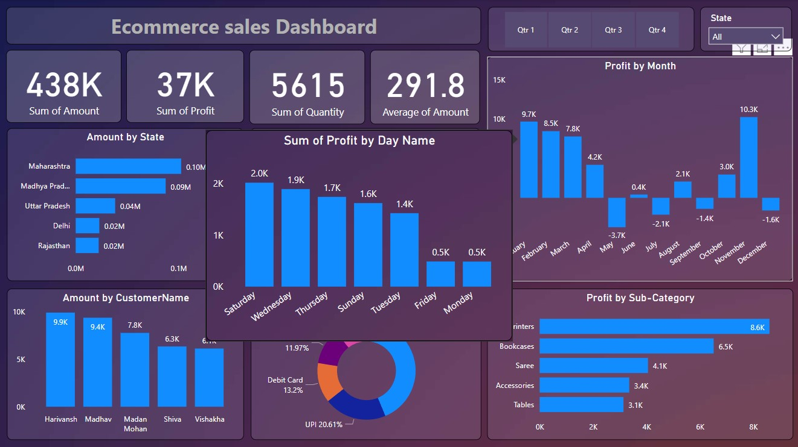

It displays various sales and profit metrics for an e-commerce business. While Power BI itself doesn't use Excel formulas directly, it uses a similar formula language called DAX (Data Analysis Expressions) to create calculated columns and measures. SQL is used to query relational databases and retrieve data for use in Power BI.
Here’s a breakdown of the different sections of the dashboard and the kind of DAX formulas that could be used to create them:
Qtr 1 - Qtr 4 & All: This section likely uses a slicer to allow users to filter the data by quarter.
Profit by Month: This section likely uses a DAX formula to calculate the total profit for each month. This would likely involve summing the profit amount for each transaction record where the transaction date falls within the specified month.
Sum of Profit & Average of Amount:
These are most likely measures created with DAX formulas.
Sum of Profit: This would likely involve summing the profit amount for all transactions.
Average of Amount: This would likely involve calculating the average of the sales amount for all transactions.
Amount by State:
This section likely shows a table that breaks down the total sales amount by state. A DAX formula would be used to calculate the total sales for each state. This would likely involve summing the sales amount for each transaction record where the customer’s state matches the specified state.
Quantity by Category:
This section likely shows a bar chart that displays the total quantity sold for each product category. A DAX formula would be used to calculate the total quantity sold for each category. This would likely involve summing the quantity sold for each transaction record where the product category matches the specified category.
Amount by CustomerName:
This section likely shows a table that breaks down the total sales amount by customer name. A DAX formula would be used to calculate the total sales for each customer. This would likely involve summing the sales amount for each transaction record where the customer name matches the specified customer name.
Quantity by Payment Mode:
This section likely shows a pie chart that shows the number of orders placed using each payment method (EMI, COD, Credit Card, Debit Card, UPI). A DAX formula would be used to calculate the count of orders for each payment mode. This would likely involve filtering the data for each payment mode and then using the COUNTROWS function to count the number of records in the filtered table.
Profit by Sub-Category:
This section likely shows a table that breaks down the total profit by product subcategory. A DAX formula would be used to calculate the total profit for each subcategory. This would likely involve subtracting the cost of goods sold from the sales amount for each transaction record, and then summing the profit amount for each subcategory.
It’s important to note that these are just examples of how DAX formulas could be used to create the visuals in this dashboard. The specific formulas would depend on the structure of the underlying data in Power BI.

Dashboard View 1

Dashboard View 2

Dashboard View 3